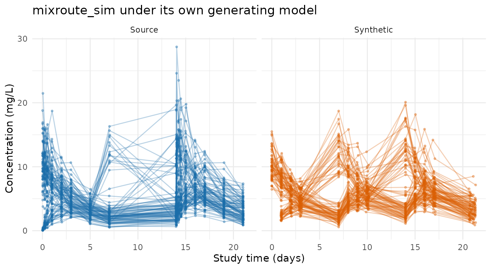
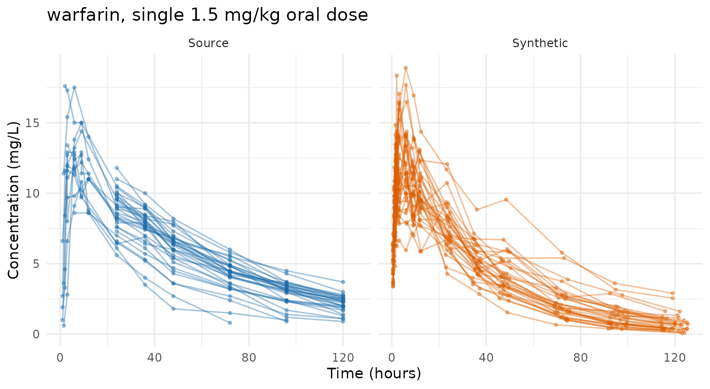
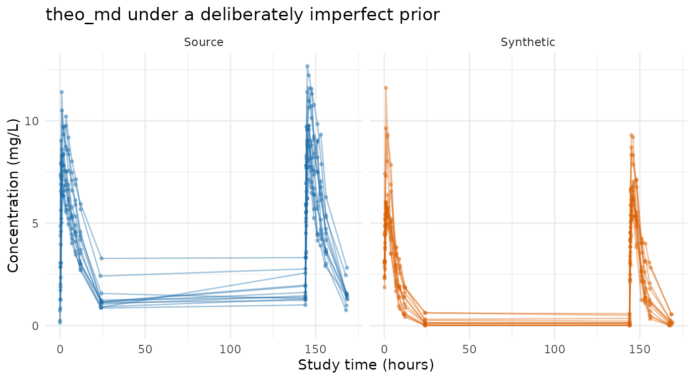
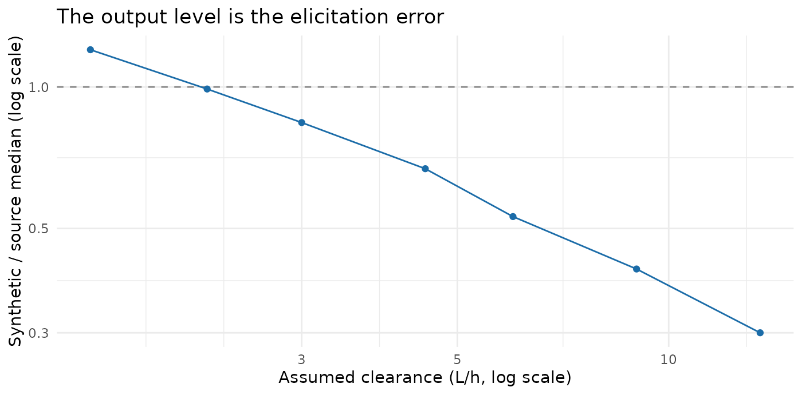

Evaluating prior-only generation on public data
Andrew Stein
Source:vignettes/articles/prior-public-data-examples.Rmd
prior-public-data-examples.Rmdsynpmx_prior() reads no data, so this article measures
something different from the other three surveys. There, a poor
comparison is the generator’s fault. Here every mismatch is the asserted
model’s fault, and the number that matters is how far the output sits
from the study the model was meant to describe.
Read this as a measurement of elicitation, not of an algorithm. The generator has no parameters to tune and nothing to learn. Ask it for a study under a correct model and it produces one; ask under a model that is twice wrong and it produces something twice wrong, quietly and without complaint. The three runs below span that — the model that generated a study, an untuned guess from general pharmacology, and a clearance three times too fast — and the sensitivity section puts a number on the slope between them.
data("theo_md", package = "nlmixr2data")
data("warfarin", package = "nlmixr2data")
theo_md <- as.data.frame(theo_md)
warfarin <- as.data.frame(warfarin)
mixroute <- as.data.frame(mixroute_sim)Which studies this mode can be pointed at
The other surveys run their generator across every public study in the package’s collection. This one runs three, and the reason is worth being precise about, because it is easy to state wrongly.
It is not a provenance problem. Trial-level realized
design — the dose levels, the cohort sizes, the sampling schedule — is
treated
as public throughout this package, because it is routinely
published, because inferring anything about an individual from it is
many-to-one and confounded, and because it is a property of the study
rather than of a person. So reading a regimen off the data and declaring
it is legitimate, and it is what the three examples below do. Record
where it came from in the design’s source and move on.
The constraint is narrower: pmx_trial_design() has a
fixed grammar, and some of these studies did things it has no way to
say.
| Dataset | What the design grammar cannot state |
|---|---|
theo_md |
— |
mixroute_sim |
Two administration routes; the mixed-route forms are refused because a design cannot say which dose went by which route |
warfarin |
Dosing in mg/kg — dose_levels takes absolute amounts,
so a weight-based regimen becomes one typical dose |
pheno_sd, wbcSim
|
The same mg/kg limitation, over irregular per-subject schedules |
mavoglurant, nimoData
|
An infusion rate per subject; duration is one number
for the whole design |
case1_pkpd, mad
|
A placebo arm, since dose_levels must be positive, and
samples at negative nominal times before the first dose |
mad |
Four of its five endpoints: ordinal, count and binary have no form |
onc_sim |
Dosing compressed into ADDL/II, and an ODE
tumour model |
Only the last row is different in kind. onc_sim’s dose
changes within a patient because of that patient’s own
response, and an
individual’s dose trajectory is that individual’s outcome rather
than a trial-level fact — so that one is a genuine per-subject
disclosure question and not merely a gap in the grammar.
Everything above it is approximable. A weight-based regimen can be declared as a typical dose, an infusion rate as a typical rate, an active-arm-only study by dropping placebo. The three worked below are the ones where the approximation is small enough that what remains under test is the asserted model rather than the asserted design. Adding another means saying which approximation was made and accepting that its cost is mixed into the result.
Shared workflow
All three examples follow the same five steps:
- declare the column meanings with
pmx_roles(), which for this mode names the schema to generate into rather than one to read; - state the public model and design, with where each came from;
- generate with
synpmx_prior(); - plot the real and synthetic observations together;
- report the scorecard and the ratio of median concentrations.
synpmx_scorecard_datatable(card, report = "minimal")
prints the tally and only the rows that are not a pass, which is the
same call the other surveys use. Five rows read
not applicable on every card below, for two different
reasons. B1a, B1b and
C2 read a run record that synpmx_avatar()
writes and this generator does not. E1 and
E2 ask whether a fitted model’s parameters moved off
their starting values and whether its between-subject terms were
estimated — questions for synpmx_model(), and this mode
fits nothing. Both are limitations of those rows on this generator
rather than properties of either dataset, and they read the same on both
cards.
Note which questions are not marked inapplicable. B4a and B4b ask directly whether a generated time vector or value vector copies an exposed real one, and both are scored here as on any other card. Both pass at zero, which is the answer a mode that reads nothing has to give — and a card that skipped the question could not have shown it.
# Observation rows only, source beside synthetic, on a shared axis.
observed <- function(data, roles, label) {
keep <- data[[roles$evid]] == 0
value <- suppressWarnings(as.numeric(data[[roles$dv]][keep]))
data.frame(
set = label,
subject = paste(label, data[[roles$id]][keep]),
time = suppressWarnings(as.numeric(data[[roles$time]][keep])),
dv = value
)[is.finite(value) & value > 0, ]
}
# The number this article is about: where the asserted model put the level,
# against where the study has it.
level_ratio <- function(source, synthetic, roles) {
med <- function(d) {
v <- suppressWarnings(as.numeric(d[[roles$dv]][d[[roles$evid]] == 0]))
stats::median(v[is.finite(v) & v > 0])
}
c(source = med(source), synthetic = med(synthetic),
ratio = med(synthetic) / med(source))
}mixroute_sim: the model that generated it is public
This fixture’s own documentation states the parameters it was simulated from — clearance 2 L/day, volume 10 L, absorption 0.5 /day and bioavailability 0.7, with clearance and volume scaled allometrically on weight. Handing those back as the public model is the best case this mode can have: the prior is not an estimate or a guess, it is the truth, and whatever gap remains is the part of the truth the catalogue cannot hold.
Three things it cannot hold here. The allometric scaling, because no
covariate reaches a parameter. The bioavailability, because
1cmt_oral has no f and the mixed form that
does is refused for a public design. And the three arms, because one
asserted model covers one route.
mixroute_roles <- pmx_roles(
id = "ID", time = "TIME", nominal_time = "NTIME", dv = "DV", amt = "AMT",
evid = "EVID", cmt = "CMT", cens = "CENS", covariates = "WT"
)
mixroute_model <- pmx_structural_model(
pk = "1cmt_oral", typical = c(cl = 2, v = 10, ka = 0.5),
source = "the documented generating truth of the mixroute_sim fixture"
)
mixroute_design <- pmx_trial_design(
dose_levels = 100, cohort_sizes = 90, sampling = c(0, 1, 2, 3, 7),
n_doses = 3, dose_interval = 7,
source = "the fixture's protocol: 100 mg on days 0, 7 and 14"
)
mixroute_covariates <- pmx_covariates(WT = pmx_covariate(
range = c(40, 130), median = 72, cv = 0.17,
source = "the fixture's documented weight distribution"
))
mixroute_syn <- synpmx_prior(
mixroute_model, mixroute_design, mixroute_roles,
n_subjects = 90, seed = 1, covariates = mixroute_covariates
)
frame <- rbind(observed(mixroute, mixroute_roles, "Source"),
observed(mixroute_syn, mixroute_roles, "Synthetic"))
ggplot2::ggplot(frame, ggplot2::aes(time, dv, group = subject, colour = set)) +
ggplot2::geom_line(alpha = 0.3) +
ggplot2::geom_point(alpha = 0.35, size = 0.7) +
ggplot2::facet_wrap(~ set) +
ggplot2::scale_colour_manual(values = comparison_colours, guide = "none") +
ggplot2::labs(x = "Study time (days)", y = "Concentration (mg/L)",
title = "mixroute_sim under its own generating model") +
ggplot2::theme_minimal()
round(level_ratio(mixroute, mixroute_syn, mixroute_roles), 3)
#> source synthetic ratio
#> 4.683 5.848 1.249
synpmx_scorecard_datatable(
synpmx_scorecard(mixroute, mixroute_syn, mixroute_roles), report = "minimal"
)The median sits within about a quarter of the study’s, which flatters it. The figure shows why, and so does the scorecard’s one substantive review row: the synthetic profiles are tighter than the real ones. One asserted model gives every subject the same route, and the route is what separates this study’s arms.
spread <- function(data) {
v <- suppressWarnings(as.numeric(data$DV[data$EVID == 0]))
v <- v[is.finite(v) & v > 0]
c(median = stats::median(v), sd = stats::sd(v),
p90 = stats::quantile(v, 0.9, names = FALSE))
}
by_arm <- tapply(mixroute$DV[mixroute$EVID == 0],
mixroute$ARM[mixroute$EVID == 0],
function(v) stats::median(v, na.rm = TRUE))
round(by_arm, 2)
#> IV only IV then SC SC only
#> 8.19 4.47 3.26
round(rbind(source = spread(mixroute), synthetic = spread(mixroute_syn)), 2)
#> median sd p90
#> source 4.68 3.95 11.32
#> synthetic 5.85 2.27 8.97The three arms sit a factor of two and a half apart, because an intravenous dose is all of the dose and a subcutaneous one is seventy per cent of it. The synthetic cohort lands between them — it is the average of arms it has no way to tell apart — and its spread is roughly half the study’s, the missing part being that between-arm separation plus the allometric scaling on weight that no covariate can reach.
This is the ceiling, and it is worth being precise about what it is a ceiling on. Handed the model that generated the data, this mode reproduces the event structure exactly, the central level to within a quarter, and the dispersion to about a half. Nothing a better prior could fix remains: what is left out is what the catalogue cannot say.
warfarin: a regimen read off the data, and a prior from drug properties
A single oral dose, sampled to 120 hours, with the PK endpoint taken on its own — the PD endpoint is a turnover model the catalogue has no form for. The regimen is regular enough to state exactly:
warfarin_pk <- warfarin[warfarin$dvid == "cp", ]
per_subject <- !duplicated(warfarin$id)
round(range(warfarin$amt[warfarin$amt > 0] /
warfarin$wt[warfarin$amt > 0]), 3)
#> [1] 1.499 1.501
round(stats::median(warfarin$wt[per_subject]), 1)
#> [1] 71.7Every subject received 1.5 mg/kg, and the 60 to 153 mg spread in the
recorded amounts is entirely weight. That regimen is the trial-level
fact this package treats as public, so it goes straight into the design
— except that dose_levels takes absolute amounts, so it
becomes one typical dose for a subject of the median weight.
warfarin_roles <- pmx_roles(
id = "id", time = "time", dv = "dv", amt = "amt", evid = "evid",
dvid = "dvid"
)
warfarin_model <- pmx_structural_model(
pk = "1cmt_oral", typical = c(cl = 0.2, v = 8, ka = 1),
source = paste("illustrative: warfarin is a low-clearance drug with a long",
"half-life and a small volume of distribution")
)
warfarin_design <- pmx_trial_design(
dose_levels = 107, cohort_sizes = 32,
sampling = sort(unique(warfarin_pk$time[warfarin_pk$evid == 0])),
n_doses = 1,
source = "1.5 mg/kg single oral dose, at the cohort's median weight"
)
warfarin_syn <- synpmx_prior(warfarin_model, warfarin_design, warfarin_roles,
n_subjects = 32, seed = 1)Nothing was fitted and nothing was tuned. The three parameters are round numbers from what is generally known about the drug: clearance well under a litre an hour, a volume close to plasma volume, and absorption fast relative to elimination.
frame <- rbind(observed(warfarin_pk, warfarin_roles, "Source"),
observed(warfarin_syn, warfarin_roles, "Synthetic"))
ggplot2::ggplot(frame, ggplot2::aes(time, dv, group = subject, colour = set)) +
ggplot2::geom_line(alpha = 0.4) +
ggplot2::geom_point(alpha = 0.4, size = 0.8) +
ggplot2::facet_wrap(~ set) +
ggplot2::scale_colour_manual(values = comparison_colours, guide = "none") +
ggplot2::labs(x = "Time (hours)", y = "Concentration (mg/L)",
title = "warfarin, single 1.5 mg/kg oral dose") +
ggplot2::theme_minimal()
round(level_ratio(warfarin_pk, warfarin_syn, warfarin_roles), 3)
#> source synthetic ratio
#> 6.300 7.034 1.116
synpmx_scorecard_datatable(
synpmx_scorecard(warfarin_pk, warfarin_syn, warfarin_roles),
report = "minimal"
)An untuned prior from general pharmacology lands within a tenth or so of the study’s level. That is the case worth holding against the one below: this mode is not inaccurate by construction, it is exactly as accurate as what was asserted.
One difference the level ratio does not show. The design declares one sampling schedule and every generated subject gets all of it, while the real study sampled some subjects more sparsely than others:
c(source = round(mean(table(warfarin_pk$id[warfarin_pk$evid == 0])), 1),
synthetic = round(mean(table(warfarin_syn$id[warfarin_syn$evid == 0])), 1))
#> source synthetic
#> 7.8 14.0A study with per-subject sampling variation comes back denser than it was, which the scorecard’s observations-per-patient row is what notices.
theo_md: an illustrative prior, and what being wrong costs
Nothing published was used here. The model is the one the methods
article uses for the same study — round numbers from allometric scaling,
never fitted to theo_md — and its clearance is deliberately
too fast.
theo_roles <- pmx_roles(
id = "ID", time = "TIME", dv = "DV", amt = "AMT", evid = "EVID",
cmt = "CMT", covariates = "WT"
)
theo_model <- pmx_structural_model(
pk = "1cmt_oral", typical = c(cl = 6, v = 35, ka = 1.5),
source = "illustrative allometric scaling; never fitted to theo_md"
)
rich <- c(0, 0.25, 0.5, 1, 2, 4, 7, 9, 12, 24)
theo_design <- pmx_trial_design(
dose_levels = 320, cohort_sizes = 12,
sampling = list(rich, 0, NULL, NULL, NULL, NULL, rich),
n_doses = 7, dose_interval = 24,
source = "illustrative protocol: 320 mg daily, sampled on days 1 and 7"
)
theo_covariates <- pmx_covariates(WT = pmx_covariate(
range = c(40, 130), median = 70, cv = 0.15,
source = "illustrative; a healthy-volunteer cohort"
))
theo_syn <- synpmx_prior(theo_model, theo_design, theo_roles,
n_subjects = 12, seed = 1,
covariates = theo_covariates)
frame <- rbind(observed(theo_md, theo_roles, "Source"),
observed(theo_syn, theo_roles, "Synthetic"))
ggplot2::ggplot(frame, ggplot2::aes(time, dv, group = subject, colour = set)) +
ggplot2::geom_line(alpha = 0.4) +
ggplot2::geom_point(alpha = 0.4, size = 0.8) +
ggplot2::facet_wrap(~ set) +
ggplot2::scale_colour_manual(values = comparison_colours, guide = "none") +
ggplot2::labs(x = "Study time (hours)", y = "Concentration (mg/L)",
title = "theo_md under a deliberately imperfect prior") +
ggplot2::theme_minimal()
round(level_ratio(theo_md, theo_syn, theo_roles), 3)
#> source synthetic ratio
#> 5.890 3.149 0.535
synpmx_scorecard_datatable(
synpmx_scorecard(theo_md, theo_syn, theo_roles), report = "minimal"
)The concentrations run low, by about half. The event structure, the sampling schedule, the occasions and the censoring flag are all correct; only the level is wrong, and it is wrong because the clearance assumed was wrong. The scorecard is the same shape as the run above, which is the point worth noticing about the scorecard here: it reads structure, and structure is what this mode gets right whatever the parameters say.
How wrong can the prior be
The runs above span the answer at three points. This sweep fills it in, holding everything but the assumed clearance fixed and reading off the level each one produces.
sweep <- do.call(rbind, lapply(c(1.5, 2.2, 3, 4.5, 6, 9, 13.5), function(cl) {
model <- pmx_structural_model(
pk = "1cmt_oral", typical = c(cl = cl, v = 35, ka = 1.5),
source = "illustrative sweep"
)
syn <- synpmx_prior(model, theo_design, theo_roles, n_subjects = 12,
seed = 1, covariates = theo_covariates)
level <- level_ratio(theo_md, syn, theo_roles)
data.frame(assumed_cl = cl, synthetic_median = round(level[["synthetic"]], 2),
ratio_to_source = round(level[["ratio"]], 2))
}))
knitr::kable(sweep, row.names = FALSE,
caption = "Assumed clearance against the level it produces")| assumed_cl | synthetic_median | ratio_to_source |
|---|---|---|
| 1.5 | 7.05 | 1.20 |
| 2.2 | 5.84 | 0.99 |
| 3.0 | 4.94 | 0.84 |
| 4.5 | 3.96 | 0.67 |
| 6.0 | 3.15 | 0.53 |
| 9.0 | 2.44 | 0.41 |
| 13.5 | 1.79 | 0.30 |
ggplot2::ggplot(sweep, ggplot2::aes(assumed_cl, ratio_to_source)) +
ggplot2::geom_hline(yintercept = 1, linetype = "dashed",
colour = "#888888") +
ggplot2::geom_line(colour = "#1B6CA8") +
ggplot2::geom_point(colour = "#1B6CA8") +
ggplot2::scale_x_log10() + ggplot2::scale_y_log10() +
ggplot2::labs(x = "Assumed clearance (L/h, log scale)",
y = "Synthetic / source median (log scale)",
title = "The output level is the elicitation error") +
ggplot2::theme_minimal()
Two things to take from this. The level the study actually sits at corresponds to an assumed clearance of a little over 2 L/h, and the illustrative model’s 6 is about three times that — hence the halved concentrations.
And the slope is shallower than one. Clearance across this sweep spans a factor of nine, and the resulting level spans a factor of four. A profile sampled richly through absorption is not purely clearance-determined: early concentrations are absorption-limited, so an error in clearance is diluted in the median. That cuts both ways. A prior wrong by a factor of two costs less than a factor of two in the output, and a level that looks close is weaker evidence about the clearance than it appears.
What the three runs held
levels_tbl <- rbind(
c(dataset = "mixroute_sim", prior = "the documented generating truth",
round(level_ratio(mixroute, mixroute_syn, mixroute_roles), 2)),
c(dataset = "warfarin", prior = "round numbers from drug properties",
round(level_ratio(warfarin_pk, warfarin_syn, warfarin_roles), 2)),
c(dataset = "theo_md", prior = "allometric scaling, clearance ~3x too fast",
round(level_ratio(theo_md, theo_syn, theo_roles), 2))
)
knitr::kable(levels_tbl, row.names = FALSE,
caption = "Median concentration, source against synthetic")| dataset | prior | source | synthetic | ratio |
|---|---|---|---|---|
| mixroute_sim | the documented generating truth | 4.68 | 5.85 | 1.25 |
| warfarin | round numbers from drug properties | 6.3 | 7.03 | 1.12 |
| theo_md | allometric scaling, clearance ~3x too fast | 5.89 | 3.15 | 0.53 |
The three rows are a gradient in one thing only: how good the asserted model was. The generating truth and an untuned guess from general pharmacology both land close; a clearance three times too fast halves the level. There is nothing else varying — the generator has no parameters, reads nothing, and did the same work in all three cases.
No run failed a structural check, and all three produced the same verdict profile, because nothing about the event table depends on the parameters being right. That is the division this mode rests on: the structure comes from the design and is reliable, the level comes from the model and is exactly as reliable as the model.
Where to go next
-
vignette("prior-demo")— one specification worked end to end, including the parts of it the generator cannot express. -
vignette("prior-algorithm")— every step, and the full catalogue enumerated from the code. - Evaluating calibration on public data — the other formally private mode, measured the same way, and what a defensible epsilon buys at these cohort sizes.
- The synpmx data generation algorithms — the other modes, and which one to use when.